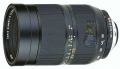

器材库 > 35mm画幅MF变焦镜头 > R 35-70/2.8 Vario-Elamrit ASPH

详细规格
发布日期
未知
焦距
35mm-70mm
最大光圈
f/2.8
最小光圈
f/22
镜头卡口
Leica R
防抖
否
颜色
黑色
yujinz2011-04-05 09:284.75 分
操作性 5.00耐用性 5.00性价比 4.00解像力 5.00色彩还原 5.00机械结构 4.50
人之人2009-10-27 14:224.67 分
操作性 5.00耐用性 5.00性价比 3.00解像力 5.00色彩还原 5.00机械结构 5.00
SIGMA3X2006-08-03 19:404.83 分
操作性 5.00耐用性 5.00性价比 4.00解像力 5.00色彩还原 5.00机械结构 5.00
产品图 / 样片
徕卡 R 35-70/2.8 Vario-Elamrit ASPH
评测 / 相关文章
该产品暂无存档的评测文章